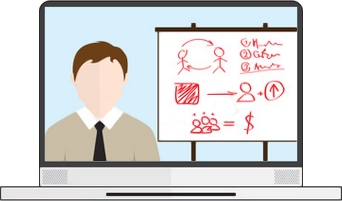
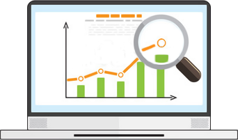

Покажем, как правильно оптимизировать сайт и сделать его привлекательным для поисковых систем. Только свежая, профессиональная и
актуальная информация!

Вы узнаете, что такое «хорошая индексация»,
«высокая посещаемость», «стабильный прирост посетителей», «ТОП по запросам» и, что намного важнее, как добиться всех этих показателей!